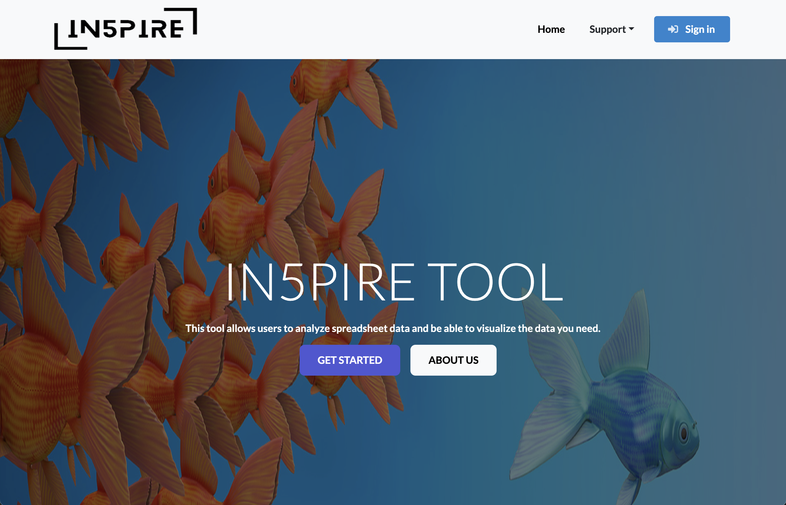
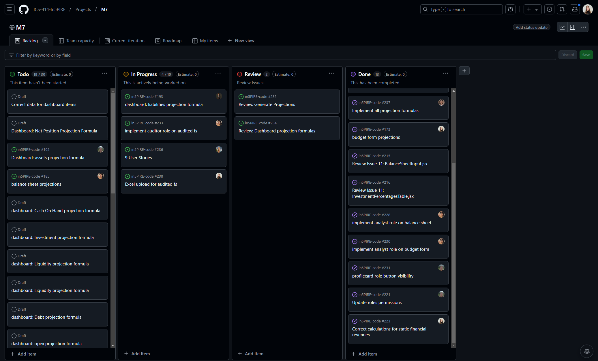
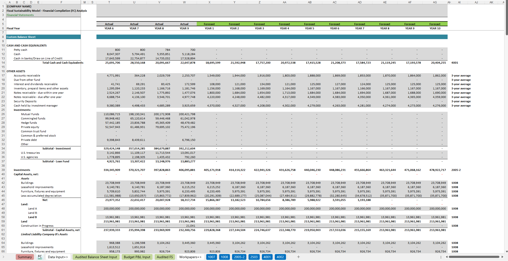
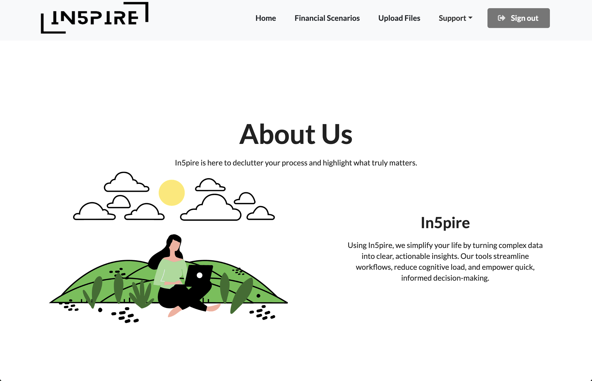

As a Level 2 software engineering course and part of my final semester, ICS 414 provided an opportunity to advance my software engineering skills. The course challenged me to apply prior knowledge in a fast-paced, collaborative setting while delivering a professional-grade financial application for accountants. From project inception to delivery, our team of seven developed a complex solution that showcased our technical abilities, problem-solving skills, and capacity to handle real-world requirements. This reflection discusses the key lessons, challenges, and growth I experienced during the course.
Unlike introductory software engineering courses, ICS 414 assumed prior familiarity with fundamental tools and technologies. The course focused on refining and deepening our understanding of software engineering processes, such as requirements gathering, design, implementation, testing, and project management. We worked through a structured workflow with clearly defined milestones.
Our assigned project—a financial projection tool with spreadsheet functionality—posed new challenges. The spreadsheets were particularly complex, consisting of multiple sheets, interconnected formulas, and dynamic calculations. To address this, we organized the backend using multiple MongoDB collections to store and manage vast amounts of interdependent data. This approach allowed us to handle scalability and optimize performance.
Working on a professional-grade project reinforced the importance of adhering to coding standards, implementing rigorous testing procedures, and iterating based on feedback. These practices ensured we delivered reliable and maintainable software.
ICS 414 emphasized practical, real-world tools and frameworks that are integral to modern software development. Our project utilized:
Meteor and React: These frameworks enabled us to quickly build and deploy a dynamic, modular web application.
Git and GitHub: We managed tasks, milestones, and progress using GitHub organizations and project boards. Issue-Driven Project Management (IDPM) provided structure and transparency for our team.
Continuous Integration (CI): Automating tests with GitHub Actions helped us maintain code quality and streamline integration.
Bootstrap 5: For UI design, Bootstrap simplified the creation of responsive, user-friendly interfaces.
MongoDB: We organized complex financial data into multiple collections, allowing us to dynamically link projections and manage large datasets efficiently.
By utilizing these tools, we built a scalable and efficient solution while adhering to modern software engineering best practices.

Maintaining high code quality was a major focus throughout the project, as we aimed to deliver a high quality product. ICS 414 emphasized rigorous quality assurance (QA) practices, which we integrated into our workflow:
Unit Testing: We implemented unit tests to validate individual functions and ensure that the core logic behaved as expected.
Integration Testing: We verified the interactions between different components, particularly where MongoDB collections and Meteor methods were linked.
Code Reviews: Weekly code reviews allowed us to identify issues early and improve code readability.
Continuous Integration: Using GitHub Actions, we used an automated testing process, so that new changes did not introduce issues or break existing functionality.
Linting: ESLint enforced coding standards and helped maintain clean, consistent code across the project.
By combining these QA practices, we minimized bugs, reduced technical debt, and delivered a polished application. The emphasis on testing and reviews also helped us identify edge cases and improve the overall performance and reliability of our solution.
A critical component of the course was the inclusion of customer milestones, where we regularly presented our progress and received feedback. These meetings simulated real-world client interactions and pushed us to adapt our work to evolving requirements.
Each milestone required us to demonstrate completed functionality, gather feedback, and revise or extend features. Iterative development became a cornerstone of our workflow, reinforcing the importance of responsiveness and user-centered design.
With a team of seven, collaboration and task management were essential to our success. Communication played a key role in overcoming challenges. Regular meetings and discussions over Discord allowed us to address blockers, clarify misunderstandings, and align on priorities. By breaking down complex tasks into manageable components, we ensured steady progress without overwhelming any single team member.
Our ability to function as a cohesive team contributed significantly to the project’s success and mirrored the dynamics of professional software development teams.

Throughout the semester, we faced several challenges that tested our technical and problem-solving skills:
Managing Complex Spreadsheets: Understanding linked data across multiple sheets with intricate formulas was a key requirement. We solved this by efficiently organizing data within MongoDB collections, allowing dynamic updates and seamless integration.
Customer Feedback Integration: Customer milestones required us to iterate quickly based on feedback, balancing improvements with maintaining project timelines.
Ensuring Code Quality: As the project grew, we relied on unit testing, integration testing, and weekly reviews to maintain a clean and functional codebase.
Balancing Workload: Task delegation and Issue-Driven Project Management allowed us to divide work equitably, ensuring consistent progress.
These experiences strengthened my ability to analyze problems, explore solutions, and adapt to changing requirements—skills that are critical in software development.
ICS 414 offered a valuable opportunity to refine and showcase my software engineering capabilities:
ICS 414 was not an introduction to software engineering but rather an opportunity to refine and apply the skills I have developed over the course of my degree. Working on a complex financial application challenged me to produce real-world solutions while operating in a team-driven environment. Regular customer milestones pushed us to iterate, adapt to feedback, and prioritize high-impact improvements.
Through this project, I gained practical experience with tools and technologies that are critical in modern software development. Managing spreadsheets and dynamic data structures using MongoDB and Meteor solidified my ability to handle complex requirements efficiently.
As I complete my degree and look forward to starting my career, ICS 414 stands out as a course that bridged the gap between academia and industry. I am confident that the skills I have improved will aid me in contributing meaningfully to any software development team.

For a look at our project, visit our project home page